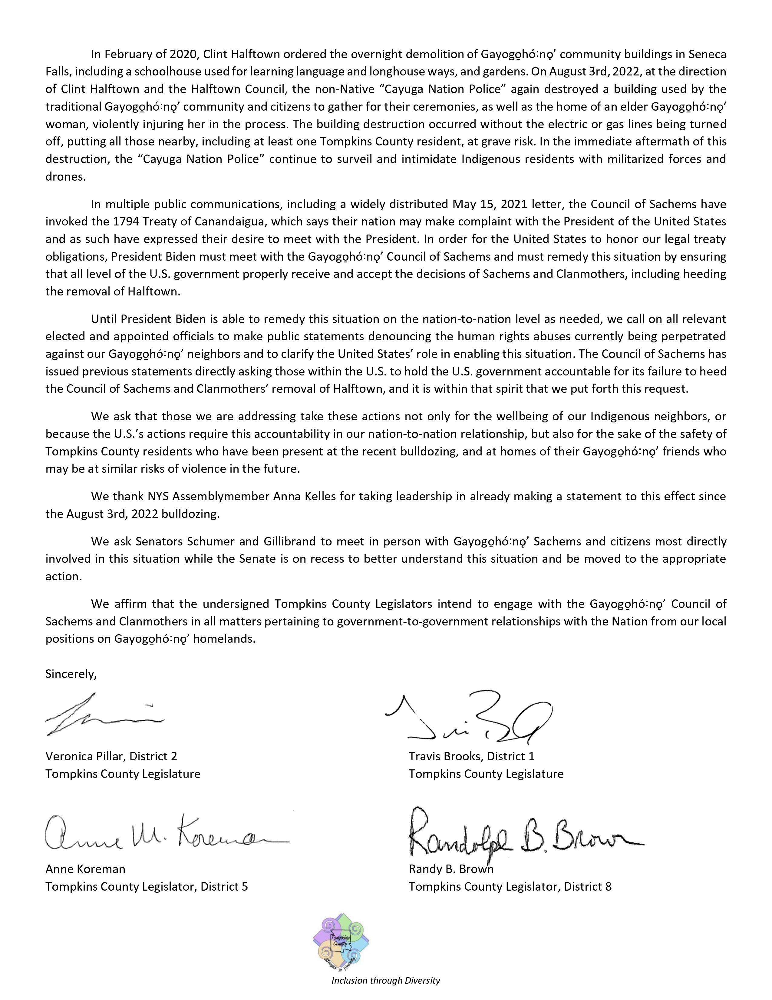
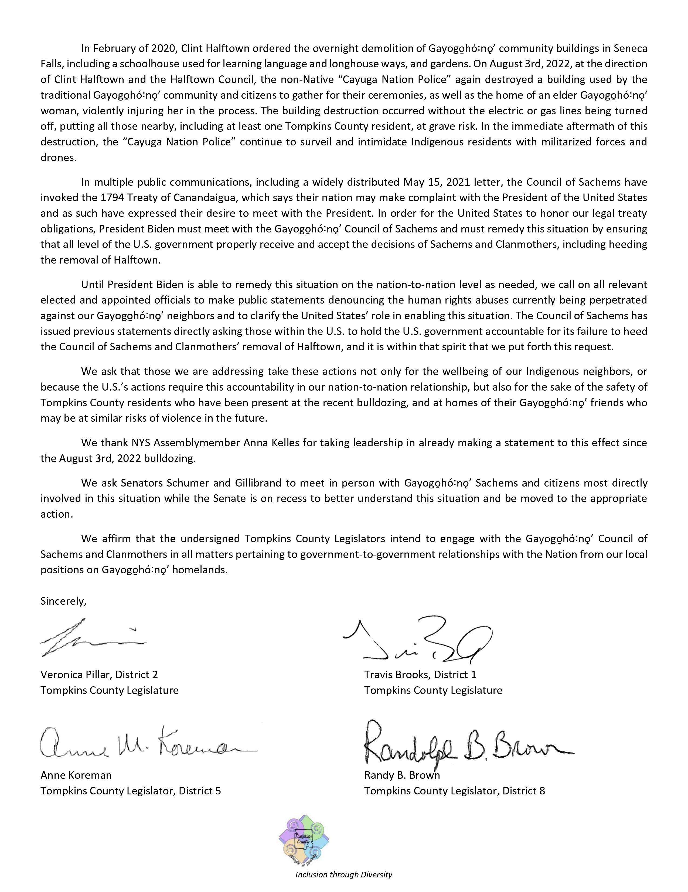

HMG Archives:
Local U.S. Government Statements
Contents:
In September 2022, after Halftown's second round of demolitions in August, nine members of the Tompkins County Legislature released a letter addressed to President Biden urging all levels of U.S. government to fix the failure to respect Gayogo̱hó:nǫ⁷ sovereignty by rescinding all recognition and empowerment of Clint Halftown.
 


Ithaca joined the Town of Dryden, Town of Enfield, Seneca County, and others when its Common Council unanimously signed a letter in support of the traditional Gayogo̱hó:nǫ⁷ and sent it to the Secretary of the Interior and other U.S. officials.


In March, Dryden passed a resolution formally urging the DOI and BIA to cease recognition of Halftown and resolving to engage with the Gayogo̱hó:nǫ⁷ Council of Chiefs and Clan Mothers in all government-to-government relations with the Nation.

In August 2021, Seneca County released a letter to the BIA expressing frustration with Halftown's actions and reflecting the uncertainty that many settlers have, thanks to Halftown and the BIA's recognition of him, about the legitimate leadership of the Gayogo̱hó:nǫ⁷ Nation.
In 2013, in commemoration of the 400th anniversary of the Two Row Wampum, there was a Two Row Wampum Renewal Campaign that urged continuing relationships of peace, respect, and environmental protection. Ithaca formally supported this campaign and resolved, among other things, to build positive and respectful relationships with its Native neighbors and to call on state and federal governments to do the same. (This resolution begins halfway down the first page.)